11. Strange Attractors
Read the opening pages · printed page 159
Strange Attractors (lorenz.c, rossler.c, predprey.c, mg.c)
Three coupled differential equations, integrated step by step. Every trajectory is pulled onto the same butterfly-shaped surface, yet two trajectories that start a hair apart end up in different wings within seconds. Here thousands of particles are released together in a tiny ball; you watch the ball stretch along the attractor and fold until it covers the whole thing. The page cycles through Lorenz (both the book's and the classic parameters), Rossler, a three-species predator-prey system, and the Mackey-Glass delay equation. Full screen →
Stretching and Folding (henwarp.c (and henon.c))
Take a square of points and push every one of them through the Henon map once. The square is stretched, bent into a horseshoe, and squeezed. Do it again and again and the horseshoe of horseshoes converges onto the Henon attractor, a curve that is a fractal in cross section. The checkerboard and hue gradient are painted on the original square so you can follow where each region goes. Full screen →
Sections
- The Hénon Attractor
- A Brief Introduction to Calculus
- The Lorenz Attractor
- The Mackey-Glass System
- Further Exploration
- Further Reading
Figures
{kind=link}
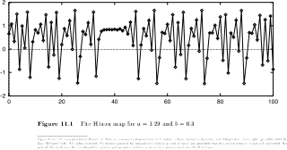
Figure 11.1{kind=link}
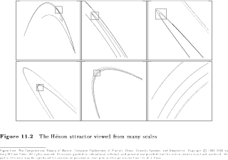
Figure 11.2{kind=link}
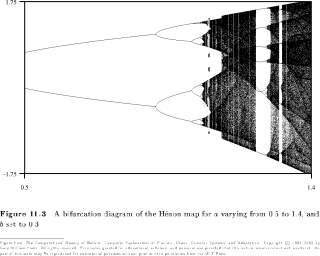
Figure 11.3{kind=link}
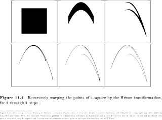
Figure 11.4{kind=link}
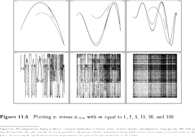
Figure 11.5{kind=link}
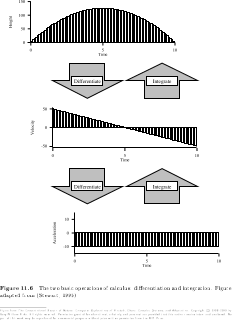
Figure 11.6{kind=link}
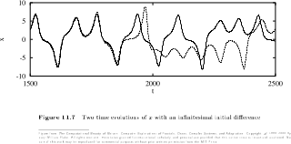
Figure 11.7{kind=link}
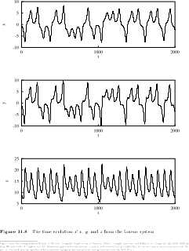
Figure 11.8{kind=link}
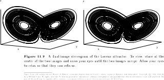
Figure 11.9{kind=link}
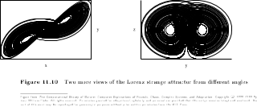
Figure 11.10{kind=link}
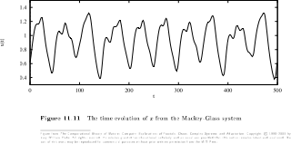
Figure 11.11{kind=link}
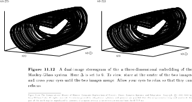
Figure 11.12{kind=link}
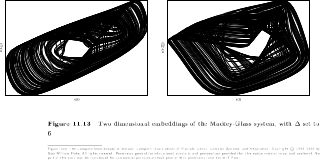
Figure 11.13